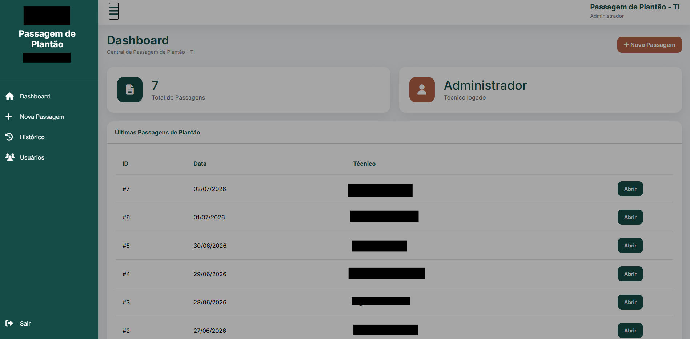
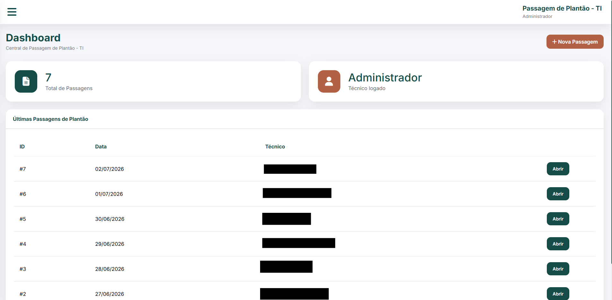
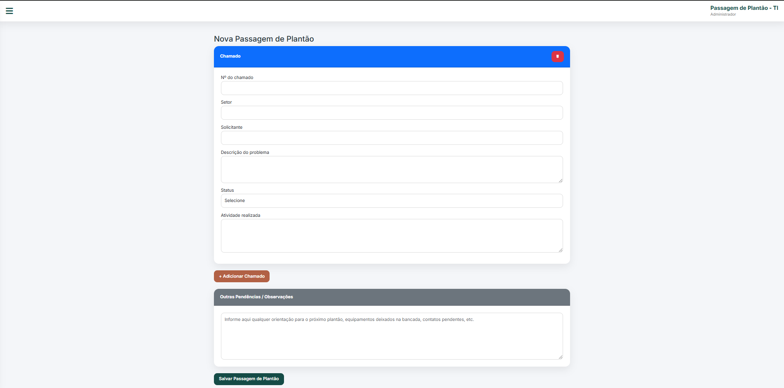
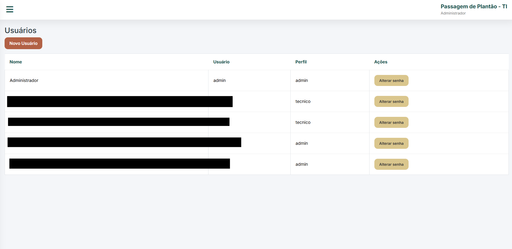
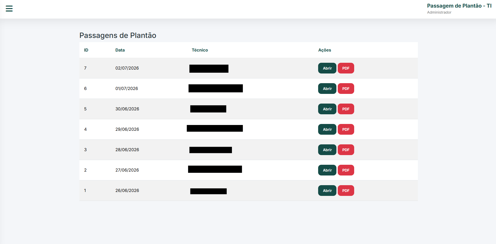

Passagem de Plantão
Plataforma de registro e rastreabilidade da passagem de plantão para a equipe plantonista de TI do hospital, garantindo continuidade operacional, auditoria de atividades e controle de pendências entre turnos em ambiente crítico de tecnologia.

Sobre o Sistema
Este sistema centraliza o registro e a gestão da passagem de plantão entre a equipe plantonista da TI, garantindo continuidade das informações e reduzindo falhas na comunicação entre turnos.
Objetivo
Garantir continuidade das informações entre plantões de TI.
Problema
A comunicação entre equipes era informal e gerava perda de informações críticas.
Solução
Criação de um sistema estruturado para registro de atividades e pendências do plantão.
Resultado
Maior organização e rastreabilidade das informações entre equipes hospitalares.
Auditoria e Controle
O sistema mantém histórico completo dos plantões, permitindo auditoria e consulta de todas as atividades registradas.

Dashboard
Visão geral dos plantões em andamento, exibindo registros recentes de cada turno em tempo real.

Novo Registro de Plantão
Tela responsável pela criação de novos registros de passagem de plantão, permitindo inserir atividades, ocorrências e observações do turno.

Gestão de Usuários
Controle de usuários do sistema, com permissões de acesso, garantindo segurança e rastreabilidade das informações registradas.

Histórico de Plantões
Registro completo de todos os plantões realizados, permitindo auditoria, consulta e acompanhamento da evolução das atividades ao longo do tempo. O sistema também permite a exportação desses registros em formato PDF para download e compartilhamento.
Como Funciona
Fluxo do processo de registro e continuidade da passagem de plantão hospitalar.
Equipe de Plantão
Profissionais registram as atividades do turno em andamento.
Registro de Informações
Lançamento de ocorrências, pendências e observações do turno.
Banco de Dados
Armazenamento estruturado com histórico completo dos plantões.
Próximo Turno
Consulta das informações garantindo continuidade operacional.
Desafios
Principais problemas resolvidos no sistema de passagem de plantão.
Rastreabilidade de informações
Garantir que todas as atividades do plantão fossem registradas e consultáveis posteriormente.
Continuidade entre turnos
Assegurar que nenhuma informação crítica fosse perdida na troca de equipes.
Consistência dos registros
Validação dos dados inseridos para evitar informações incompletas ou duplicadas.
Banco de dados estruturado
Organização dos plantões com histórico completo e fácil consulta por período.
Auditoria e controle
Implementação de logs para rastrear todas as alterações e registros de plantão.
Gostou deste sistema?
Esse projeto faz parte da infraestrutura hospitalar que desenvolvi para monitoramento e automação de serviços críticos.